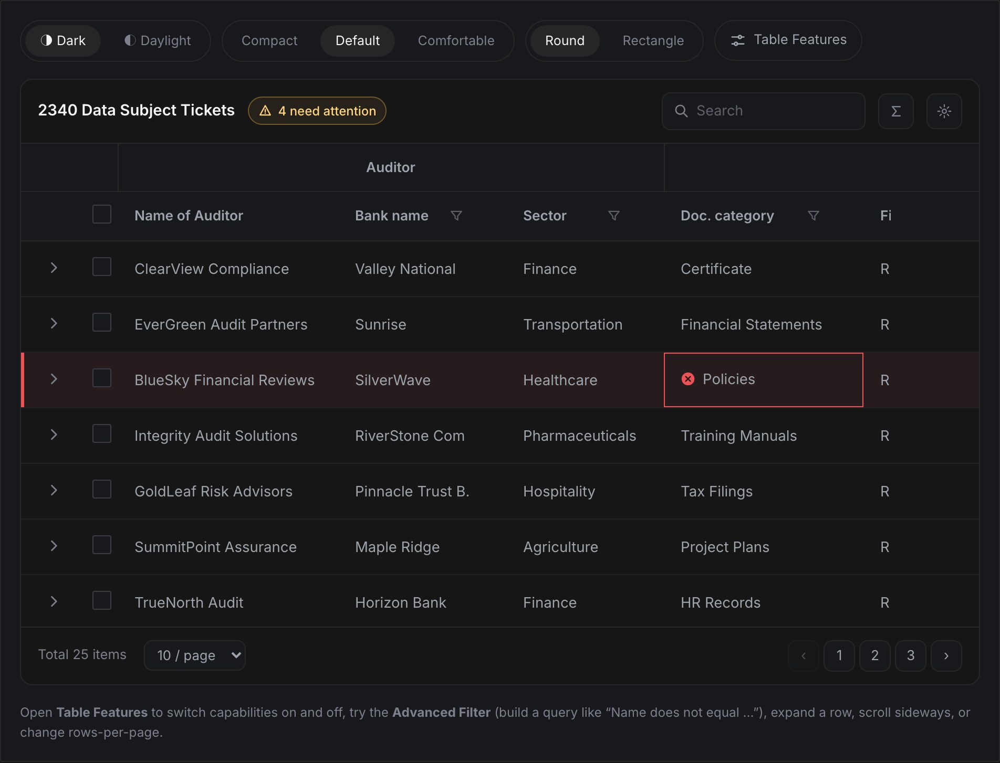
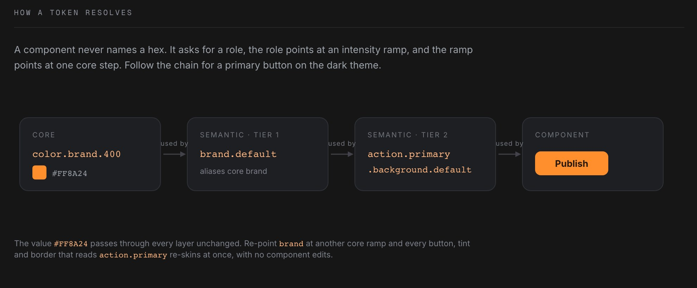

Build interfaces, optimistically.
Optimistic is a headless, token-driven design system: 58 components, three token tiers, at home in any stack and legible to machines. I built it alone, with AI, to prove a claim I make out loud. It is live, it is free, and the source is public.
Open the design system design.theoptimisticdesigner.comTap a heart and it fills before the server has agreed. Engineers call that an optimistic update: render the finished thing first, let the proof catch up. It is a small technical trick that happens to be a belief system, so I named the whole thing after it.
The name carries three layers from the Latin optimus. The optimist, which is the belief. The optimistic update, which is the method. The optimum, which is the result. A design system is the same bet at a larger scale: you decide what good looks like once, render it everywhere, and let every future screen catch up to it.
I have spent years watching fragmentation quietly bill companies: the same table rebuilt in four products, the same button drawn five ways, engineers maintaining interfaces instead of building them. I have costed it, invoiced it to a leadership team, and rebuilt an ecosystem around fixing it. That work is the Y.Design story.
So when I say design organisations can move two to three times faster with AI, I know how that sounds: another opinion at a conference. I could have written a think piece. Instead I built the thing a team of engineers and designers would normally be funded to build, alone, in the open, and put it online where anyone can check my work.
Nine foundations set the ground rules: colour, typography, spacing, grid, elevation, radius, breakpoints, and the principles that hold them together. On top of those sit 58 components, from a button to a full data grid with filtering, grouping, pinning, inline editing, and master detail rows.
Every component gets the same documentation treatment: a live demo you can configure, anatomy, behaviour, do's and don'ts, the tokens it consumes, and the code. Not a component gallery, a manual.


Optimistic is free to use, and the source is public. It installs the way I wish every system did: the components are copied into your repository rather than hidden behind a dependency, so you can read them, change them, and keep them when I am no longer in the picture. No lock-in, no black box, no version of this that quietly becomes a subscription.
Take the whole thing, take one component, or take only the token architecture and throw the rest away. All three are correct uses.
Read the source at github.com/subinsab/Optimistic, or start with the documentation and see whether it earns your trust first.
Optimistic is not a portfolio piece pretending to be a product. It is the argument I make to executives, rendered in code: that design is infrastructure, that a system pays for itself, and that the ceiling on what a small team can build has moved and most organisations have not noticed yet.
If you lead a design organisation and you are trying to work out what your team could be doing at this speed, that conversation is the one I most want to have.